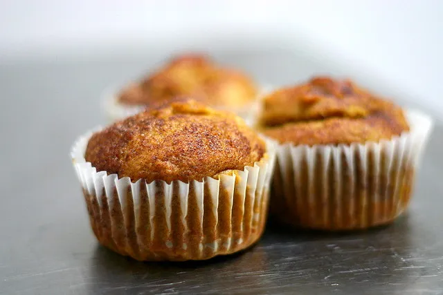

Home
One Can Pumpkin Muffins

Yummy pumpkin muffins with cinnamon sugar topping.
These pumpkin muffins are everything that's great about pumpkin bread but in muffin form. And the best part? No leftover pumpkin.
This recipe uses the whole can.
This recipe from Deb Perelman of Smitten Kitchen celebrates everything there is to love about pumpkin spice season.
Ingredients
- 1 15-ounce can (1 3/4 cups) pumpkin puree
- 1/2 cup vegetable or another neautral cooking oil or melted butter (115 grams)
- 3 large eggs
- 1 2/3 cups (330 grams) granulated sugar
- 1 1/2 teaspoons baking powder
- 3/4 teaspoon baking soda
- 3/4 teaspoon fine sea or table salt
- 3/4 teaspoon ground cinnamon
- Heaped 1/4 teaspoon fresh grated nutmeg
- Heaped 1/4 teaspoon ground ginger
- Two pinches of ground cloves
- 2 1/4 cups (295 grams) all-purpose flour
Topping
- 1 tablespoon (12 grams) granulated sugar
- 1 teaspoon ground cinnamon
Steps
- Heat Oven to 350 degrees F.
- Butter your muffin tin or coat it with nonstick spray.
- In a large bowl, whisk together pumpkin, oil, eggs and sugar until smooth. Sprinkle baking powder, baking soda, salt, cinanmon, nutmeg, ginger and cloves over batter and whisk until well-combined. Add flour and stir with a spoon, just until mixed. Scrape into prepared pan and smooth the top. In a small dish, or empty measuring cup, stir sugar and cinnamon together. Sprinkle over top of batter.
- Bake muffins for 65 to 75 minutes until a tester poked into all parts of muffins (both the top and center will want to hide pockets of uncooked batter) come out batter-free, turning the muffins once during the baking time for even coloring.
- You can cool it in the pan for 10 minutes and then remove it, or cool it completely in there. The latter provides the advantage of letting more of the loose cinnamon sugar on top adhere before being knocked off.
- Muffins keeps at room temperature as long as you can hide it. I like to keep mine in the tin with a piece of foil or plastic just over the cut end and the top exposed to best keep the lid crisp as long as possible.
Home